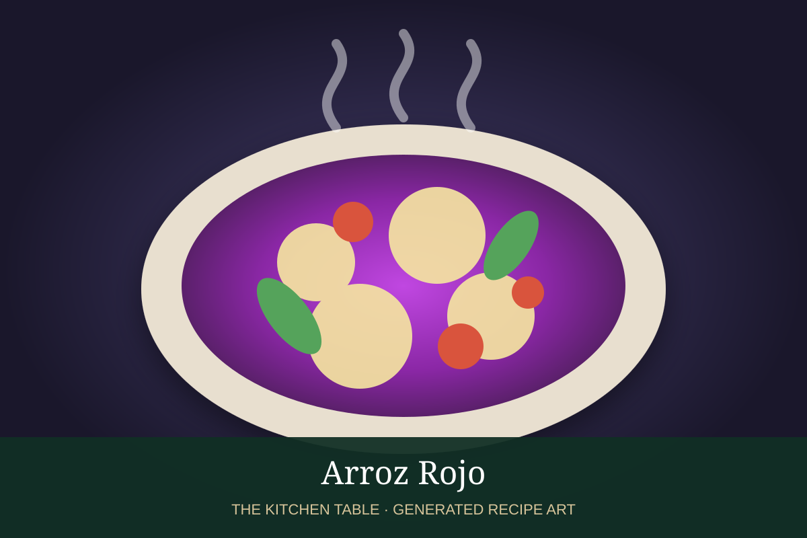

← Back to all recipes
RICE · MEXICAN
Arroz Rojo
Fluffy Mexican red rice toasted in oil and simmered with tomato, onion, garlic, broth, peas, and carrots.
40 minServes 6

Photo: Eureka Recetas
Ingredients
- 2 cups long-grain white rice
- 3 tbsp neutral oil
- 4 Roma tomatoes
- 1/4 white onion
- 2 garlic cloves
- 3 cups chicken or vegetable broth
- 1/2 cup peas
- 1 small carrot, diced
- 1 1/2 tsp kosher salt
Preparation
- Rinse rice and drain thoroughly.
- Toast rice in oil until lightly golden.
- Blend tomatoes, onion, garlic, and 1 cup broth until smooth.
- Pour tomato mixture over rice and cook 2 minutes.
- Add remaining broth, peas, carrot, and salt; cover and simmer on low until tender.
- Rest 10 minutes, then fluff.